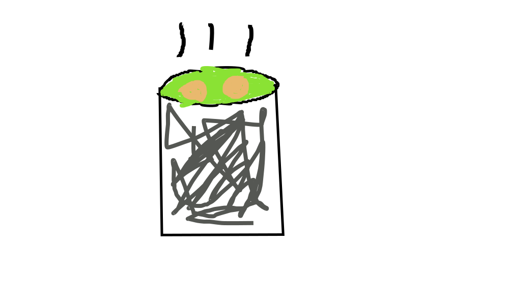

World's Greatest Matzo Ball Soup

Description
Doesn't that look delicious? Whether on a hot summer day or in the middle
of winter, a good matzo ball soup gets the job done. To the uninitiated,
matzo ball soup is basically a chicken noodle soup with a matzo ball in it.
Matzo balls are kind of like a bready dumpling that takes on the flavor of
the broth. They are bland by themselves, but combined with the soup
they are excellent! But enough talk, let's dive into the recipe.
Ingredients
- matzo ball mix (can be found in the kosher section of your local grocery store)
- 1 bag of carrots
- 2 bags of parsnips
- 1 bunch of celery
- 1 whole organic chicken
- 2 bunches of dill
- 1 white onion
- salt, pepper, paprika
- eggs
- bag of kosher egg noodles; get whichever thickness you like!
Steps
- Peel and chop carrots and parsnips into small pieces
- Wash celery and chop into small pieces
- Peel outer layer of the onion but don't chop it up!
- Wash off the chicken to get rid of any nasty dangling bits
- Fill up a large stock pot with water about halfway
- Heat up the water to a full boil
- Once water is boiling, throw in all the veggies, the dill, and the chicken.
Reduce the heat to medium-low so that the soup is lightly simmering
- With everything in the pot, add some salt and pepper. It's okay to
go light on the seasoning and add more later to your liking
- After an hour and 15 minutes, take the chicken out and put on a
rectangular glass pyrex pan
- Season the top of the chicken with salt, pepper, and paprika
- Set your oven to broil and throw in the chicken. Only broil for about 2-3
minutes. It is already cooked so you are just trying to crisp up the top
- With the chicken set aside, lower the heat for the soup to low
- Now make the matzo balls according the to the instructions on the box
- Make egg noodles according to the bag's instructions
- With the chicken, matzo balls, and noodles done, all you have to do
is give the soup time to strengthen its flavors. The soup should cook for roughly 3-4 hours
total. Remember to add more salt and pepper if it needs it
- Put some chicken, noodles, a matzo ball or two, and the soup into a bowl and enjoy!